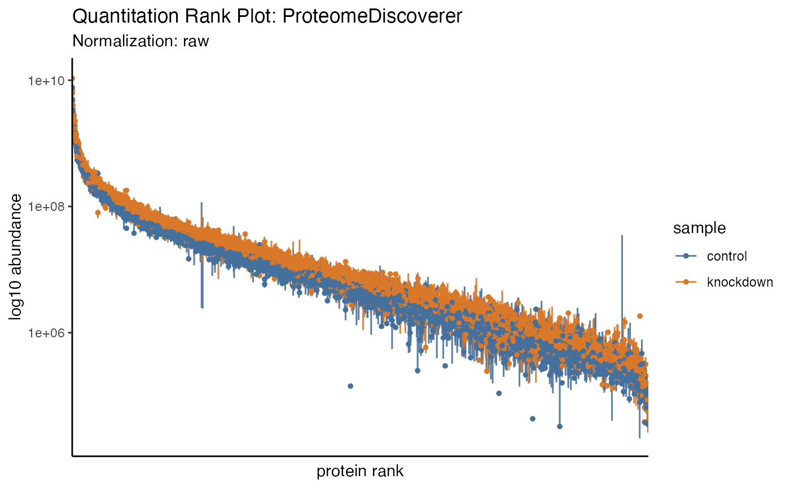

Summarizing
summarizing.RmdSummarizing proteomics data is vital to understanding the bigger
picture and conveying summary stats that set the tone for the larger
analysis. The results of each summary can be directed to via the
destination option to "print" on screen,
"save" to a file or "return" as a tibble.
Printing
The tidyproteomics data object can be printed to show a summary of the object contents.
hela_proteins
#>
#> ── Quantitative Proteomics Data Object ──
#>
#> Origin ProteomeDiscoverer
#> proteins (10.76 MB)
#> Quantitation 6 files
#> 2 samples (control, knockdown)
#> 7055 proteins
#> 4 log10 dynamic range
#> Accounting (4) match_between_runs num_peptides num_unique_peptides num_psms
#> Annotations (9) description gene_id_entrez gene_id_ensemble gene_name
#> biological_process cellular_component
#> molecular_function wiki_pathway
#> reactome_pathway
#> And these can expand to encompass additions generated through other operations.
hela_proteins %>% expression(knockdown/control) %>% enrichment(knockdown/control, .term = 'biological_process')
#> Warning in preparePathwaysAndStats(pathways, stats, minSize, maxSize,
#> gseaParam, : There are duplicate gene names, fgsea may produce unexpected
#> results.
#> ── Quantitative Proteomics Data Object ──
#>
#> Origin ProteomeDiscoverer
#> proteins (11.37 MB)
#> Quantitation 6 files
#> 2 samples (control, knockdown)
#> 7055 proteins
#> 4 log10 dynamic range
#> Accounting (4) match_between_runs num_peptides num_unique_peptides num_psms
#> Annotations (9) description gene_id_entrez gene_id_ensemble gene_name
#> biological_process cellular_component
#> molecular_function wiki_pathway
#> reactome_pathway
#> Analyses (1)
#> knockdown/control -> expression & enrichment (biological_process)
#> Summarizing
Groups
The tidyproteomics data object can summarize the quantitative and accounting data …
hela_proteins %>% summary()
#> ── Summary: global ──
#>
#> files protein_groups proteins peptides peptides_unique quantifiable CVs
#> 6 7055 7055 66329 58706 90.8 0.2495823
#> … using columns corrisponing to experimental meta-data …
hela_proteins %>% summary(by = 'sample')
#>
#> ── Summary: sample ──
#>
#> sample files protein_groups proteins peptides peptides_unique quantifiable
#> control 3 7055 7055 66329 58706 90.8
#> knockdown 3 7055 7055 66329 58706 90.9
#> CVs
#> 0.1600474
#> 0.2099227
#> … terms in the annotation meta-data …
hela_proteins %>% summary(by = 'biological_process')
#>
#> ── Summary: biological_process ──
#>
#> biological_process files protein_groups proteins peptides
#> cell communication 6 9 9 100
#> cell death 6 1 1 3
#> cell differentiation 6 3 3 9
#> cell growth 6 104 104 1419
#> cell organization and biogenesis 6 17 17 241
#> cell proliferation 6 7055 7055 66329
#> cellular component movement 6 6 6 13
#> cellular homeostasis 6 324 324 2854
#> coagulation 6 9 9 68
#> conjugation 6 181 181 1460
#> defense response 6 15 15 83
#> development 6 38 38 180
#> metabolic process 6 342 342 2804
#> peptides_unique quantifiable CVs
#> 93 92.0 0.1965058
#> 1 100.0 0.3350875
#> 9 38.9 0.3040841
#> 839 80.3 0.2761302
#> 241 96.7 0.2124385
#> 58706 90.8 0.2495823
#> 11 67.9 0.4107544
#> 2631 93.8 0.2574754
#> 58 88.5 0.2210740
#> 1240 89.3 0.2629965
#> 76 70.9 0.2713523
#> 164 73.0 0.2483315
#> 2422 88.6 0.2532647
#> … and even terms in the accounting data …
hela_proteins %>% summary(by = 'num_peptides')
#> ℹ Too many variables, limiting to the first 25
#>
#> ── Summary: num_peptides ──
#>
#> num_peptides files protein_groups proteins peptides peptides_unique
#> 228 6 1 1 228 59
#> 200 6 1 1 200 200
#> 177 6 1 1 177 177
#> 171 6 1 1 171 2
#> 166 6 1 1 166 166
#> 122 6 1 1 122 122
#> 119 6 1 1 119 119
#> 117 6 1 1 117 117
#> 114 6 1 1 114 114
#> 112 6 1 1 112 89
#> 109 6 1 1 109 77
#> 106 6 2 2 212 202
#> 105 6 1 1 105 84
#> 102 6 1 1 102 92
#> 98 6 2 2 196 168
#> 97 6 2 2 194 173
#> 92 6 1 1 92 92
#> 87 6 1 1 87 87
#> 82 6 2 2 164 164
#> 80 6 1 1 80 80
#> 78 6 1 1 78 60
#> 77 6 3 3 231 225
#> 76 6 2 2 152 152
#> 73 6 2 2 146 146
#> 71 6 1 1 71 38
#> quantifiable CVs
#> 100 0.1840887
#> 100 0.2307803
#> 100 0.2288907
#> 50 0.1398134
#> 100 0.1694431
#> 100 0.2052712
#> 100 0.1607318
#> 100 0.1538720
#> 100 0.3231853
#> 100 0.2649476
#> 100 0.1507668
#> 100 0.2172032
#> 100 0.1780890
#> 100 0.2328608
#> 100 0.2493657
#> 100 0.3614933
#> 100 0.2214776
#> 100 0.1905658
#> 100 0.2170462
#> 100 0.1401807
#> 100 0.2313789
#> 100 0.1907217
#> 100 0.3346623
#> 100 0.3431082
#> 100 0.2921650
#> Contamination
In addition, the data can account for any type of contamination. If the key word “CRAP” is use then the data will partition out by Keratin, BSA, Trypsin and Other, so long as the protein descriptions contain CRAP and presumably originate from the CRAPome. However, any FASTA file, used at the data translation step (eg with ProteomeDiscoverer), and manipulated to contain CRAP in the description can be utilized.
hela_proteins %>% summary(contamination = 'CRAP')
#>
#> ── Summary: contamination ──
#>
#> sample replicate native BSA Keratin Other Trypsin sample_id
#> control 1 92.7% 3.66% 3.56% 0.0023% 0.1% e9b20ea7
#> control 2 92% 4.02% 3.89% 0.00205% 0.123% ef79cc4c
#> control 3 92% 4.01% 3.9% 0.00208% 0.113% eebba67b
#> knockdown 1 92% 4.01% 3.88% 0.00183% 0.125% ebf4b0fe
#> knockdown 2 92.7% 3.66% 3.59% 0.0023% 0.0648% ea36dac9
#> knockdown 3 92.2% 3.89% 3.82% 0.00232% 0.0679% ecfd1822
#> import_file sample_file
#> p97KD_HCT116_proteins.xlsx f1
#> p97KD_HCT116_proteins.xlsx f4
#> p97KD_HCT116_proteins.xlsx f5
#> p97KD_HCT116_proteins.xlsx f2
#> p97KD_HCT116_proteins.xlsx f3
#> p97KD_HCT116_proteins.xlsx f6
#> Alternatively, any protein descriptor can also be use …
hela_proteins %>% summary(contamination = 'Trypsin')
#>
#> ── Summary: contamination ──
#>
#> sample replicate native Trypsin sample_id import_file
#> control 1 99.9% 0.104% e9b20ea7 p97KD_HCT116_proteins.xlsx
#> control 2 99.9% 0.128% ef79cc4c p97KD_HCT116_proteins.xlsx
#> control 3 99.9% 0.117% eebba67b p97KD_HCT116_proteins.xlsx
#> knockdown 1 99.9% 0.13% ebf4b0fe p97KD_HCT116_proteins.xlsx
#> knockdown 2 99.9% 0.0672% ea36dac9 p97KD_HCT116_proteins.xlsx
#> knockdown 3 99.9% 0.0707% ecfd1822 p97KD_HCT116_proteins.xlsx
#> sample_file
#> f1
#> f4
#> f5
#> f2
#> f3
#> f6
#> … and as such.
hela_proteins %>% summary(contamination = 'ribosome')
#>
#> ── Summary: contamination ──
#>
#> sample replicate native ribosome sample_id import_file
#> control 1 99.8% 0.155% e9b20ea7 p97KD_HCT116_proteins.xlsx
#> control 2 99.8% 0.15% ef79cc4c p97KD_HCT116_proteins.xlsx
#> control 3 99.8% 0.156% eebba67b p97KD_HCT116_proteins.xlsx
#> knockdown 1 99.8% 0.171% ebf4b0fe p97KD_HCT116_proteins.xlsx
#> knockdown 2 99.8% 0.166% ea36dac9 p97KD_HCT116_proteins.xlsx
#> knockdown 3 99.8% 0.164% ecfd1822 p97KD_HCT116_proteins.xlsx
#> sample_file
#> f1
#> f4
#> f5
#> f2
#> f3
#> f6
#> Visualizing
Currently two summary visualizations are implemented in tidyproteomics.
Counts
In a simple grouped barchart, proteins (individual, and groups) as well as peptides (all, unique) are displayed with the match-between-runs shown as the margin above the ms2 evidenced identifications.
hela_proteins %>% plot_counts()
Quantitation
In recent literature a summary of protein quantitation has been visualized as a rank-based dot-plot.
hela_proteins %>% plot_quantrank()
Additionally, this plot can be extended to highlight statistical differences via an unbiased all-pair-wise comparison, to give an anticipated view of how to guide downstream analyses.
hela_proteins %>% plot_quantrank(display_filter = 'log2_foldchange', display_cutoff = 2)
#> Warning: ggrepel: 30 unlabeled data points (too many overlaps). Consider
#> increasing max.overlaps
Filter to limit to the range c(low, high) and display
the protein ids.
hela_proteins %>% plot_quantrank(show_rank_scale = TRUE, limit_rank = c(1,25))